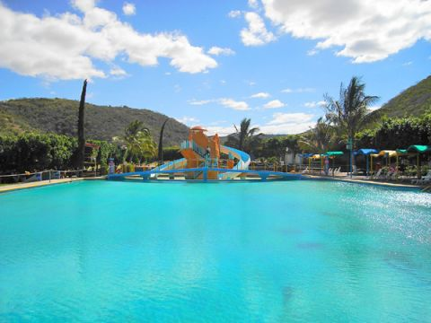
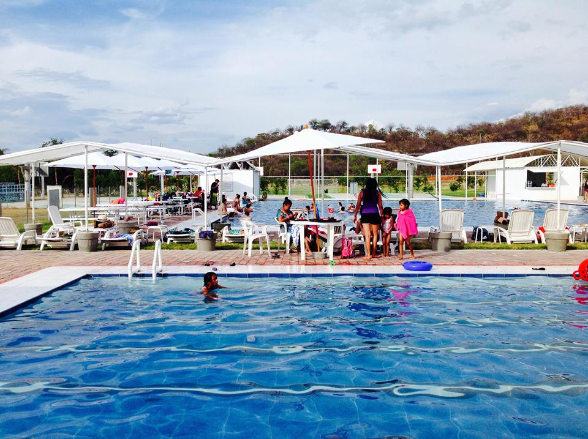
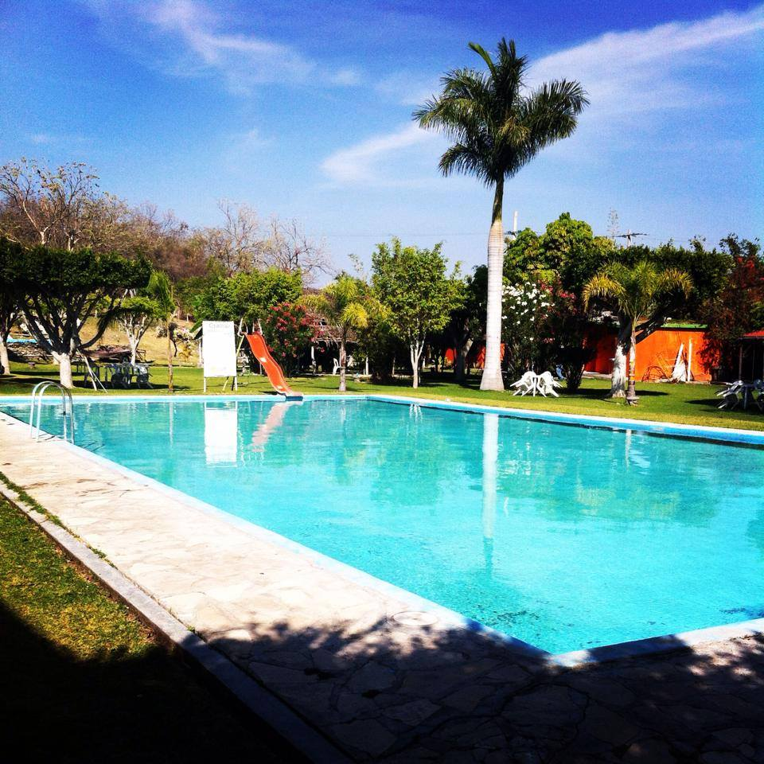

CENTROS RECREATIVOS
PARQUE ACUÁTICO "SAN CARLOS"

San Carlos se encuentra ubicado en:
Camino a los Limones s/n
Comunidad de San Carlos Izúcar de Matamoros, Puebla. Teléfonos: (01243) 4325098 / 4325019 Disfruta de la diversión con: Aguas termales, 4 albercas y
2 sensacionales tobaganes; además cuentan con zona de sport, camping,
zona de snacks y zona extrema. Disponen también de hospedaje
con todos los servicios.
CLUB ATLETICO "LA LAGUNA"

Se encuentra ubicado en: Kilómetro 17 carretera Izucar-Tehuacan,
San Juan Epatlán, Puebla, Mexico. Lun - Dom: 9:00-19:00 Teléfono: 2431001329 y 2431063474 Correo: club_atletico_lalaguna@outlook.com La vocación del Club Atlético "La Laguna"
está dirigida especialmente a la niñez y la juventud,
a las cuales ofreceremos tarifas especiales. Contamos con: 1 Cancha de Fútbol 5 1 Cancha de Fútbol Profesional 1 Cancha de Beisbol Infantil 2 Canchas de Basquetbol 1 Cancha de Basquetbol medidas NBA 3 Canchas de Voleibol 2 Canchas de pádel Tenis 1 Cancha de Tenis 1 Alberca Semi olímpica 1 Chapoteadero 1 Pista Olímpica Áreas para acampar Juegos infantiles Baños y regaderas 4 Líneas de tirolesa de 120 mts cada una Estacionamiento Gratis
RECREATIVO "CITLALITLÁN"

Sucursales: Carretera a San Martín Totoltepec S/N
San Juan Epatlán EPATLÁN, Puebla , 74630 Tel: (243) 433.5315 Nuestro balneario que en náhuatl significa
“Lugar de las Estrellas” está localizado en una zona semi desértica
donde encontrarás paz y armonía. Citlalitlán es un centro recreativo dirigido a
toda la familia, en el podrás encontrar: Areas verdes Areas de campamento Renta de caballos Alberca Chapoteadero Ruta de bicicleta Temascal Además de un restaurante con comida
de la región.
IR A INICIO